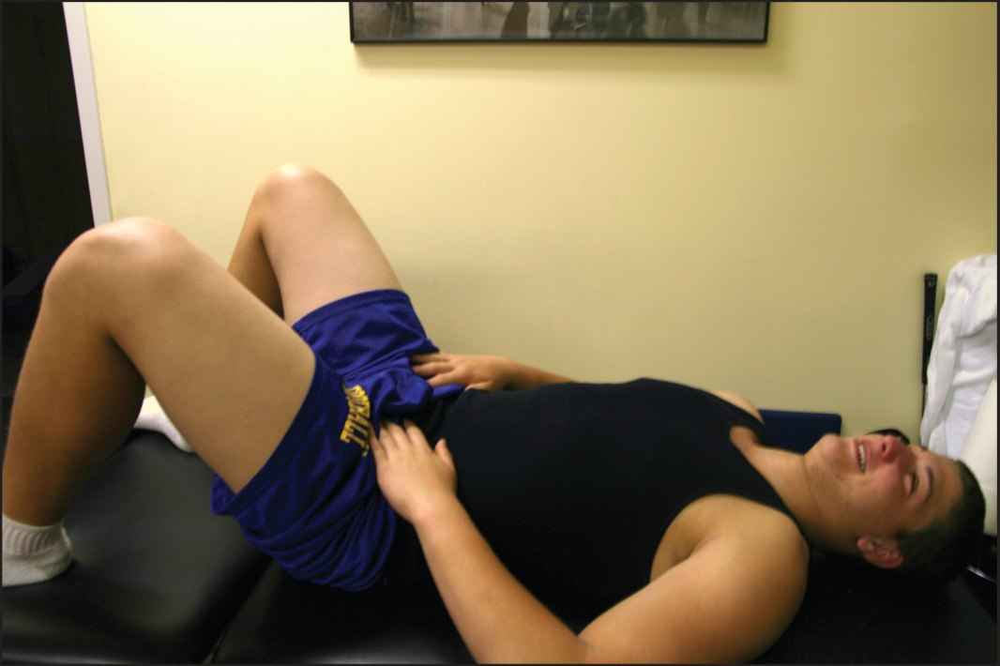
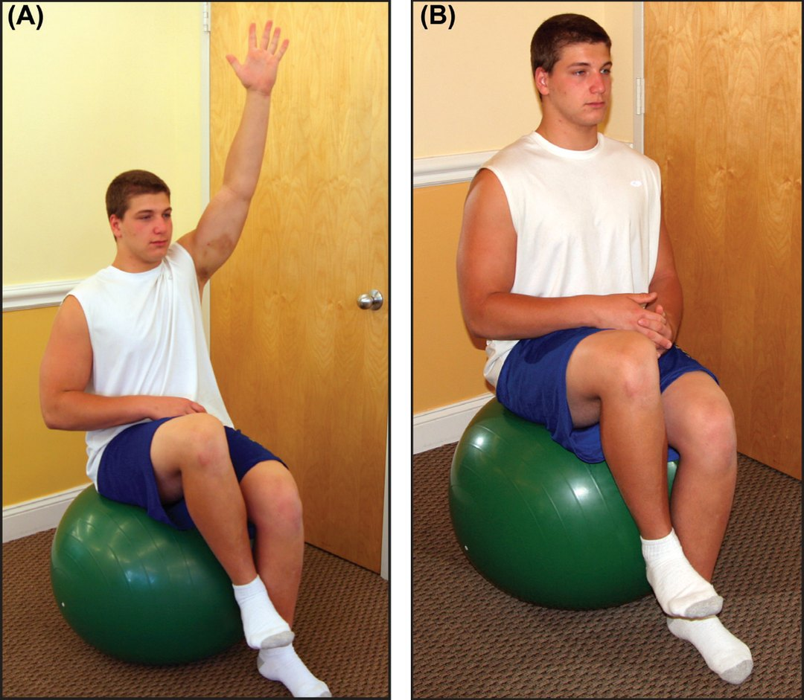
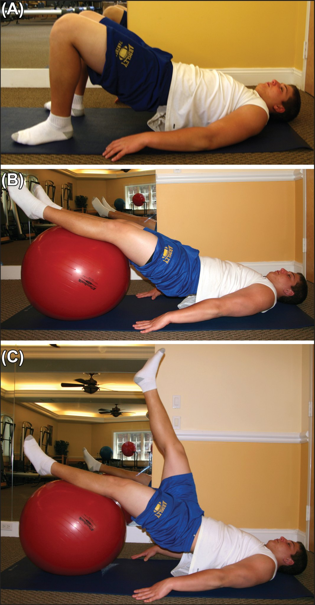
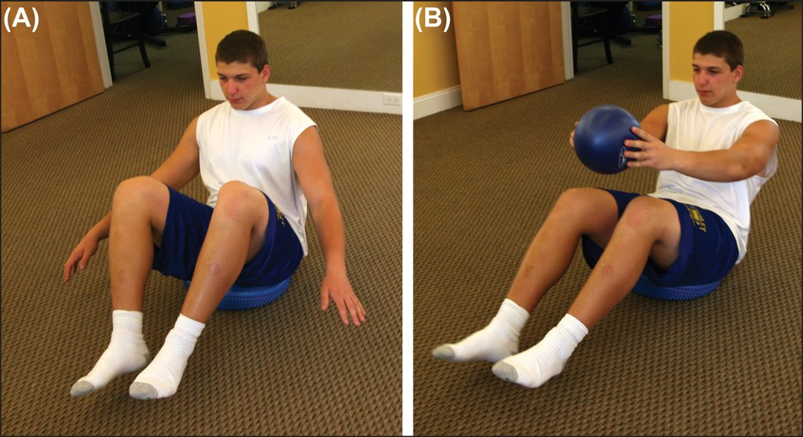
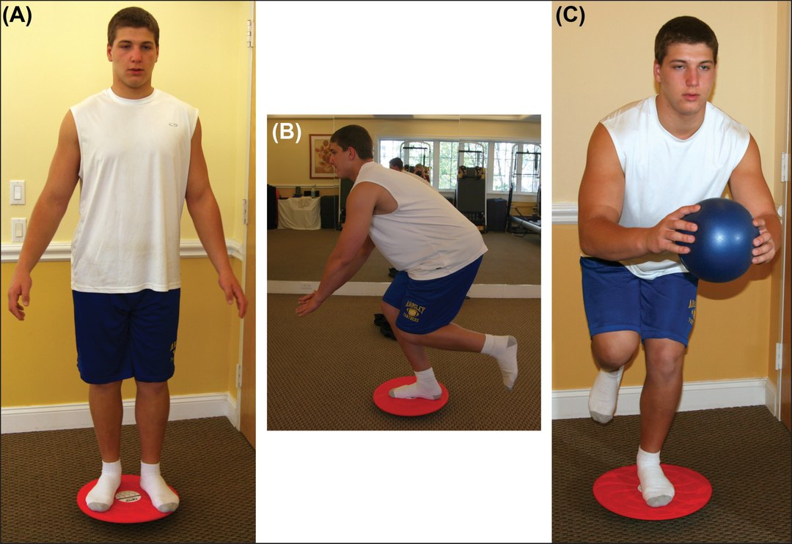
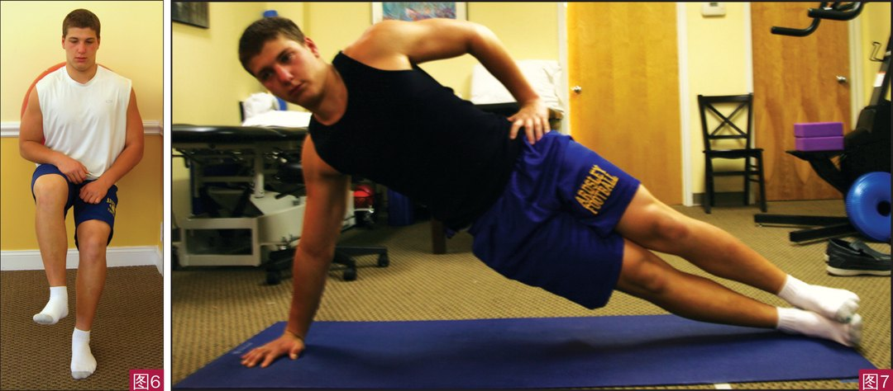
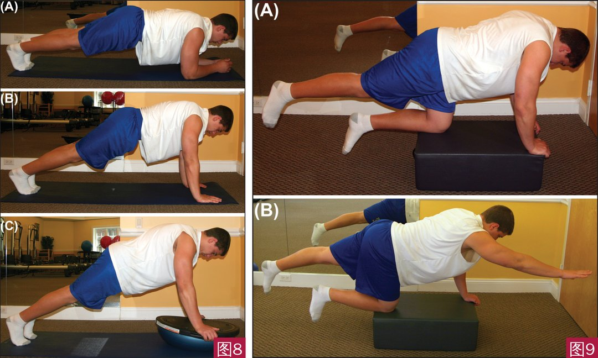

🔖原文首页（IJSPT 2014 年第 9 卷第 6 期）
📚 文献卡片
▪ 英文原题：Athletic Pubalgia and Associated Rehabilitation（运动性耻骨痛及其康复）
▪ 作者：Abigail A. Ellsworth, PT, DPT · Mark P. Zoland, MD · Timothy F. Tyler, MSPT, ATC
▪ 机构：威彻斯特普拉提治疗与健康中心 · 纽约普通与腹腔镜外科 · Lenox Hill 医院 NISMAT 运动医学研究所
▪ 期刊：International Journal of Sports Physical Therapy（IJSPT）
▪ 年卷期：2014;9(6):774-784
▪ PMCID：PMC4223287
▪ 文章类型：特邀临床评论（Invited Clinical Commentary）
▪ 证据级别：5 级
▪ 关键词：Adductor strain · athletic pubalgia · groin pain · rehabilitation · sports hernia · transversus abdominis
运动员腹股沟痛的评估和治疗很难：解剖复杂、多种病变常同时存在、不同病变症状相似，而且很多系统都能把疼痛牵涉到腹股沟。康复师拿到的转诊单常常只写着“腹股沟痛”或“运动疝”。
“运动疝”这个词正在被淘汰，原因有二：① 腹壁上并没有真正的缺损，不是疝；② 也不只发生在运动员身上。借助 MRI，它被拆分为两类：
| 名称 | 定义 |
|---|---|
| 腹股沟区损伤（inguinal disruption） | 腹股沟管周围软组织损伤引起的疼痛综合征；涵盖运动疝、早期疝、Gilmore 腹股沟、运动员腹股沟等说法 |
| 运动性耻骨痛（athletic pubalgia） | 更内侧的腹直肌-内收肌共同腱膜从耻骨上撕脱/分离，通常伴有一定程度的内收肌腱病变 |
英国疝学会 2014 年立场声明（曼彻斯特共识）指出，耻骨联合 MRI 常见两类表现：骨髓水肿，以及耻骨联合关节囊和内收肌改变（累及前关节囊、关节囊韧带，以及长收肌与腹直肌共同腱膜的附着点）。
| 内容 | 要点 |
|---|---|
| 受伤机制 | 高速下踩地转体、急停变向、反复踢球、侧向移动；耻骨联合在大腿强力外展/内收时反复承受扭矩 |
| 典型症状 | 运动时“深部”腹股沟或下腹痛，比内收肌或髂腰肌拉伤更深、更剧烈，多为单侧 |
| 保守治疗 | 首选，4 个阶段约 6～8 周；约 6 个月无效视为慢性，可考虑手术 |
| 术后康复 | 术后通常先休息约 4 周，按软组织愈合规律分阶段推进，8～12 周回归运动 |
| 关键 | 腹横肌的正确募集和时序，形成包绕脊柱的“圆柱” |
一句话概括：先分清是哪种损伤，再按阶段重建核心与髋部的控制。
需要通过详细的病史和查体，与以下情况鉴别：
• 腹股沟（内收肌）拉伤、耻骨炎、真性疝
• 髋关节骨关节炎
• 直肠或睾丸的牵涉痛、梨状肌综合征
• 骨盆或下肢合并骨折
诊断主要靠病史和查体，再用 MRI 确认。专门的 MRI 方案可评估腱膜板撕裂程度和内收肌腱病变；做 / 不做 Valsalva 动作的序列可以评估腹横筋膜是否变薄（Gilmore 描述的腹股沟区损伤表现之一）。
常见体征：耻骨结节压痛、盆底及周围肌群无力；抗阻仰卧起坐时症状加重（腹部向外鼓）；内收肌和屈髋肌在动态动作中无力；步态观察可见骨盆运动和下肢力线异常。
表 1 提示运动性耻骨痛的 5 个体征（Kachingwe 等）
| 序号 | 体征 |
|---|---|
| 1 | 主诉腹股沟深部 / 下腹部疼痛 |
| 2 | 冲刺、切步、仰卧起坐等用力时加重，休息后缓解 |
| 3 | 耻骨支上、腹直肌和/或联合腱附着处可触及压痛 |
| 4 | 屈髋 0°、45° 和/或 90° 位抗阻内收时疼痛 |
| 5 | 抗阻卷腹时疼痛 |
保守治疗是首选：休息、避免诱发运动、针对性康复，必要时配合耻骨联合或内收肌起点激素注射、抗炎药。支持保守治疗的证据不多，但多数研究显示 6～8 周物理治疗后明显改善。
康复重点：评估核心稳定、髋部力量和柔韧性，找出代偿和失衡；训练功能动作中的激活时序和募集模式；用手法处理软组织和筋膜受限；全面加强髋内收肌、屈肌、内旋肌、伸肌、核心稳定肌和腰盆肌群。
表 2 运动性耻骨痛的保守治疗方案
| 第一阶段 1～2 周 | |
| 重点 | • 控制疼痛和水肿 • 坐、站、仰卧姿势和脊柱中立位的宣教 • 腹横肌募集 • 髋和腰椎松动（Ⅰ、Ⅱ 级）增加活动度 • 轻柔主动拉伸腘绳肌、内收肌、股四头肌、髂腰肌和腰椎 • 几乎不加负荷地强化腹横肌，侧卧髋外展和后伸 |
| 第二阶段 2～4 周 | |
| 重点 | • 功率车或椭圆机热身 • 步态训练：足跟着地、站立中期、蹬离时的骨盆运动与时序 • 继续腹横肌募集和强化 • 腰椎达到全范围/功能活动度，增加髋活动度 • 开始静态核心强化，能保持脊柱中立 • 加强髋和骨盆稳定的募集，重点臀肌、腹横肌、多裂肌 • 功能强化从双腿开始，疼痛和力量改善后进阶到单腿 • 脊柱和髋松动加入旋转（Ⅱ、Ⅲ 级） |
| 进阶标准 | • 日常活动疼痛 <2/10 • 腰椎和髋达到全功能活动度 • 站立和单腿活动时能募集并保持腹横肌收缩 • 行走无痛 • 行走和单腿活动时躯干无侧倾（无 Trendelenburg） |
| 第三阶段 4～6 周 | |
| 重点 | • 功率车或椭圆机更高速度和阻力热身，跑步机快走 • 行走时骨盆稳定良好，能轻松募集腹横肌 • 继续步态训练和骨盆 PNF 模式，建立良好运动模式 • 腰盆和髋达到全/功能活动度，消除残余受限 • 动态核心训练：活动中保持脊柱中立，加入不稳定平面 • 站立稳定训练加阻力或平衡干扰，从双腿到单腿功能活动 • 继续主动拉伸；肌筋膜放松和软组织处理 |
| 进阶标准 | • 日常活动、行走和快走均无痛 • 髋、骨盆和腰椎全功能活动度 • 站、坐、走及单腿活动（加不稳定平面或扰动）时能保持脊柱中立 • 能察觉并纠正姿势异常 |
| 第四阶段 6～8 周 | |
| 重点 | • 热身改为运动/娱乐项目专项 • 活动度从功能范围进阶到全范围 • 主动拉伸与静态拉伸交替 • 以功能性、等张、等长和等速方式做向心和离心强化 • 手法肌筋膜放松和软组织松动处理残余受限 • 下肢及上下肢组合的 PNF 模式训练 |
表 3 保守治疗早期的核心与本体感觉练习示例
| 类别 | 练习（均从双腿进阶到单腿） |
|---|---|
| 初级下腹 / 核心 | • 呼气到底时做骨盆后倾 • 骨盆后倾 + 呼气 + 桥式 • 前桥和侧桥，配合呼气、保持骨盆中立 |
| 本体感觉 | • 在不稳定平面上保持骨盆中立 • 在不稳定平面上抛接球 • 在不稳定平面上使用 BodyBlade® 震颤棒 |
术后康复与保守治疗的阶段相似，但必须遵循软组织愈合规律，不能过早给修复处过大应力。不同外科医生的方案各有不同，但有共同原则。术后通常先休息约 4 周，3～4 周后才正式开始物理治疗；避免过度的躯干后伸和旋转；此时禁止卷腹和仰卧起坐。
表 4 术后康复方案
| 第 1 周 | |
| 内容 | • 只做日常活动 • 不提重物，不做任何增加腹压的活动 • 术后第二天开始在平地行走 • 前 24～48 小时每 2 小时冰敷 15 分钟 • 伤口护理 |
| 第 2～3 周 | |
| 内容 | • 触诊和视觉模拟评分（VAS）评估 • 切口愈合允许时开始水中轻阻力练习 • 站立闭链下肢和髋练习：提踵；站立髋内收、外展、屈、伸 • 开始局部激活腹横肌、多裂肌、髂腰肌和髋深层旋转肌 • 内收肌肌腹深层按摩 • 胸腰椎手法，维持/改善活动度 • 轻柔拉伸：躯干侧屈、髋后伸、腰大肌、腘绳肌、股四头肌 • 倒走 |
| 第 4 周 | |
| 内容 | • 复评 VAS 监测进展 • 双侧本体感觉和平衡练习，开始单侧 • 在监控疼痛和负荷下做核心激活抗阻 • 髋旋转肌、臀大肌、臀中肌稳定练习 • 开始腹部瘢痕松动，以及周围组织的深层按摩和放松 • 轻柔拉伸，逐渐加入轻中度阻力的主动拉伸 • 手法改善髋、腰盆交界和脊柱活动度 |
| 第 5～6 周 | |
| 内容 | • 复评 VAS 监测进展和疼痛耐受 • 单侧和双侧平衡与本体感觉练习 • 开始内收肌渐进抗阻（监测疼痛）：等长收缩、屈膝外倒、弹力带抗阻侧步 • 矢状面和水平面腹部进阶：90/90 脚跟下放、坐位等长保持、跪姿平板、标准平板、骨盆在髋上/躯干在骨盆上的整合功能练习、卷腹 |
| 第 6～8 周 | |
| 内容 | • 心肺训练 20～30 分钟，含热身和放松 • 髋和下肢加负重强化 • 前后慢跑、跳绳、短距离冲刺 • 灵敏和协调训练；交叉步、跨步 • 弹力带内收方向的单腿离心下放 • 全身挑战的核心稳定；增强式训练 • 动态骨盆稳定，髋外侧和臀肌强化 |
最后阶段一般按 8～12 周回归运动计划，视手术范围和耐受情况可能更久：平衡和本体感觉进阶到专项水平，加入扰动和不平地面；加强动态功能性向心和离心训练；第 8～12 周末加入上下肢结合的初级增强式训练。
合并伤：腹股沟痛常有多种病因同时存在。Larson 等发现，运动疝修补与髋关节镜手术同时进行，成功率明显高于只处理其中一种。

🔖图1：骨盆后倾。A 仰卧放松，双手放在两侧髂前上棘，指尖轻压其内侧软组织；B 把耻骨联合向肚脐方向拉，指尖应感到两侧腹横肌对称收缩，肋骨下沉，腰椎轻松压平

🔖图2：髋部与核心稳定练习。A 坐在球上，髋膝 90°，手放在髋或大腿上；B 双膝双脚并拢于中线，抬起一侧膝，同时保持骨盆和躯干稳定；能稳定后，对侧手压在抬起的膝上、另一手上举，进一步增加挑战

🔖图3：桥式加抬腿。A 双脚踩地做桥式；B 双腿放在瑞士球上，向下压球、伸膝，让骨盆抬起；C 能在球上做桥后，一腿伸直抬起，保持躯干稳定

🔖图4：不稳定平面上的骨盆稳定进阶。A 坐在充气平衡垫上，双膝双脚并拢，双脚着地找到骨盆稳定；B 双臂前伸保持中线，抬起一侧膝

🔖图5：双腿与单腿平衡及本体感觉训练。A 站在 360° 平衡板上，屈髋屈膝保持平衡；B 掌握双腿后进阶到单腿；C 单腿稳定后加入抛接球

🔖图6（左）：靠墙深蹲加骨盆稳定，球放在下背后，蹲到屈髋 90°，保持躯干骨盆不动再抬起一侧膝；图7（右）：侧桥，肩、肘、髋、踝对齐撑起

🔖图8（左）：前桥进阶。A 前臂支撑，保持骨盆对齐；B 双手撑地，手在肩正下方；C 双手撑在 BOSU 球上保持平板
图9（右）：四点跪训练。A 膝在髋下、手在肩下，一腿伸出时保持骨盆对齐；B 伸出一腿和对侧手臂，保持骨盆和肩带对齐
• 证据级别低：5 级临床评论，保守和术后方案都基于作者经验和既往文献，作者也承认可参考的康复研究很少
• 图文不符：图 2 图注描述了 A、B、C 三步，原文只给了 A、B 两张照片，且 A 照片显示的是图注中 C 的手臂上举动作；图 4 图注描述 A～D，原文只有 A、B 两张
• 笔误：表 2 第三阶段末写的是“不要进入第三阶段”，应为第四阶段；“Trendelenberg”应为 Trendelenburg
• 术语仍未统一：作者也承认“腹股沟区损伤”和“运动性耻骨痛”的划分尚无普遍共识
• 优点：同时给出保守和术后两套分阶段方案，进阶标准明确，配图清楚
① 概念：“运动疝”不是疝，分为腹股沟区损伤和运动性耻骨痛
② 诊断：深部单侧腹股沟痛、耻骨压痛、抗阻内收/卷腹痛，MRI 确认
③ 保守：四阶段 6～8 周，先控痛和腹横肌，再到单腿、不稳定平面和专项
④ 时限：约 6 个月保守无效视为慢性，可考虑手术
⑤ 术后：第 1 周只日常活动，2～3 周局部激活，5～6 周内收肌抗阻，8～12 周回归
⑥ 关键：腹横肌延迟激活与长期腹股沟痛相关，正确募集和时序是康复核心
欢迎关注骨科康复小黄公众号，获取更多物理治疗的专业知识！
📄参考文献：
Ellsworth AA, Zoland MP, Tyler TF. Athletic Pubalgia and Associated Rehabilitation. Int J Sports Phys Ther. 2014;9(6):774-784. PMCID: PMC4223287.
文中图片均来自原文（图中仅有 A/B/C 字母），表 1～4 已译为中文，仅用于学术交流。